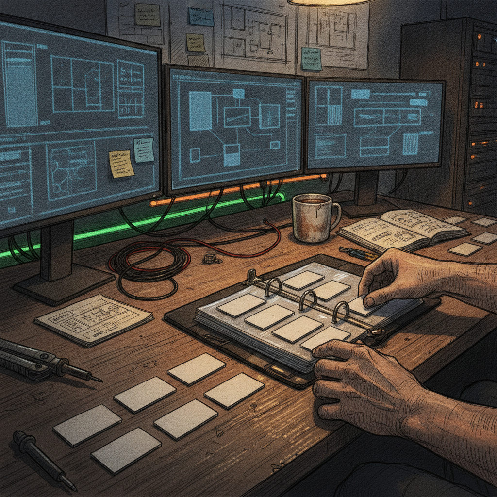

A closer look at Traitfolio, and treating NFTs like real collectibles
I stopped scrolling on this one because of the framing, not the product pitch. Most NFT talk still gets stuck on price charts and floor sweeps. This post skipped all that and just said: I think of these things like trading cards. That is a much more honest way to talk about a hobby a lot of people actually have.
What was bookmarked
@ThiccLiquidity, who describes themselves as an NFT collector and artist, posted about how they have always viewed NFTs as more than just art. In their words, NFTs are collectibles and trading cards, things you hunt for, organize, compare, and show off. That mindset is what led them to build something called Traitfolio. The post says the goal was not to build another marketplace, but something else, and the text cuts off right before explaining what that something else actually is. There is a link in the post, but no further detail was captured with it, so I do not have specifics on Traitfolio's actual feature set yet.

Why it matters
A lot of NFT tooling gets built around trading: buy, sell, flip, track price. Far less gets built around the part that made people love collecting things in the first place, which is organizing a set, comparing traits, seeing what you are missing, and showing your stuff off to people who get it. That is the same instinct behind sports cards, comic collections, and toy shelves. Framing NFTs that way instead of as speculative assets is a small shift, but it points at a different kind of product: one built for the collector's everyday experience instead of the trader's dashboard.
The practical breakdown
What it seems to do: based on the post, Traitfolio is being built around the collectible mindset rather than a marketplace model. That suggests some kind of tool for organizing, viewing, or comparing NFTs you own or want, more like a binder or a card catalog than an order book.
Who it helps: if the direction holds, it is aimed at collectors first, the people who care about traits, sets, and completeness, not just resale value.
Why builders should care: there is a real gap between how people actually experience collecting and the tools built for them. A lot of NFT infrastructure assumes everyone is a trader. Building for the collector's actual behavior, hunting, organizing, comparing, showing off, is a different design problem, and one that has not been solved particularly well across the space.
What still needs work: the post is a teaser. It does not say what platforms or chains Traitfolio supports, whether it is live, or what it actually looks like once it opens. I am summarizing intent here, not a finished product.
What I would test first: whether it can actually organize a mixed collection across different projects in a way that feels like flipping through a real binder, not just another wallet viewer with a new coat of paint.
Rick's take
I like this framing a lot, because it matches how I actually think about collecting too. It was never just about the art or the price for me, it was about the hunt and the set and having something worth showing someone. @ThiccLiquidity coming at this as both a collector and an artist is a good starting point for a tool like this, because it means the person building it has actually felt the itch they are trying to solve for. The one honest gap here is that the post got cut off right where the interesting part starts, so I do not know yet what Traitfolio actually looks like in practice. That is not a knock on the idea, just a reason to want to see more of it.
What to watch next
The real test will be what Traitfolio looks like once there is something to actually use: how it organizes a collection, how it handles traits and comparisons across sets, and whether it feels different from a wallet viewer or explorer with new branding. I would watch for a follow up post or a working link before forming a real opinion on it.
Source and links
Source: X post by @ThiccLiquidity, https://x.com/i/web/status/2073111532184260661, Retrieved on 2026-07-03. No external references were captured with the post; the linked media in the original post was not available for review.